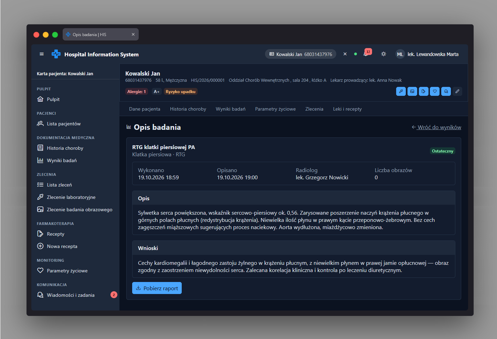

Opis badania obrazowego app-imaging-report-view
Ścieżka
To nie jest samodzielna podstrona z własnym adresem - jest to
komponent (app-imaging-report-view) osadzony wewnątrz
strony szczegółów wyniku
ResultDetailPage pod adresem
/patients/:patientId/results/imaging/:resultId,
wyświetlany wyłącznie wtedy, gdy dane trasy wskazują
{ kind: 'imaging' } (wynik typu obrazowego).
Strona-rodzic jest chroniona przez
permissionGuard(PERMISSIONS.IMAGING_RESULT_READ).
Przeznaczenie
Prezentuje opis badania obrazowego sporządzony przez radiologa:
metadane wykonania badania oraz ustrukturyzowany raport podzielony
na sekcje „Technika”, „Opis” i „Wnioski”. Komponent jest wyłącznie
prezentacyjny (bez formularzy i akcji zapisu) - cała logika
pozyskania wyniku znajduje się w stronie-rodzicu
ResultDetailPage.
Dane wejściowe
-
Wymagany wejściowy sygnał
resulttypuImagingResult, przekazywany przez stronę-rodzica po wczytaniu wyniku badania.
Akcje
Komponent nie wykonuje zapytań ani akcji - jedynie renderuje pola przekazanego wyniku:
- Pasek metadanych: data i godzina wykonania badania („Wykonano”), data i godzina opisania („Opisano”), nazwisko radiologa oraz liczba obrazów.
- Sekcja „Technika” - wyświetlana tylko, gdy wynik zawiera opis techniki badania.
-
Sekcja „Opis” - treść pola
findings(opis radiologiczny). -
Sekcja „Wnioski” - treść pola
conclusion; nagłówek sekcji przyjmuje wariant „danger” (ostrzegawczy), jeśli wynik jest oznaczony jako krytyczny (result().critical), w przeciwnym razie wariant „navy”.
Zrzut ekranu
